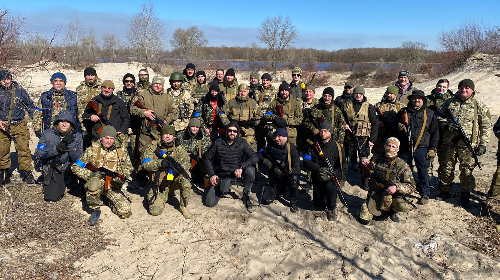
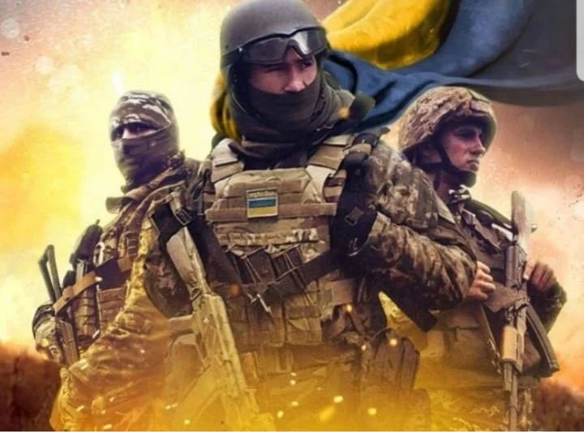
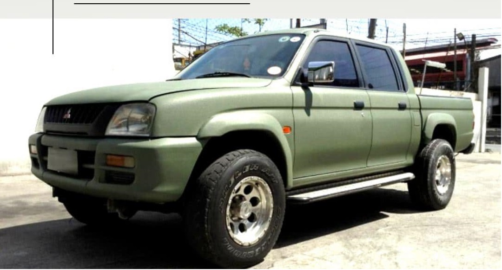
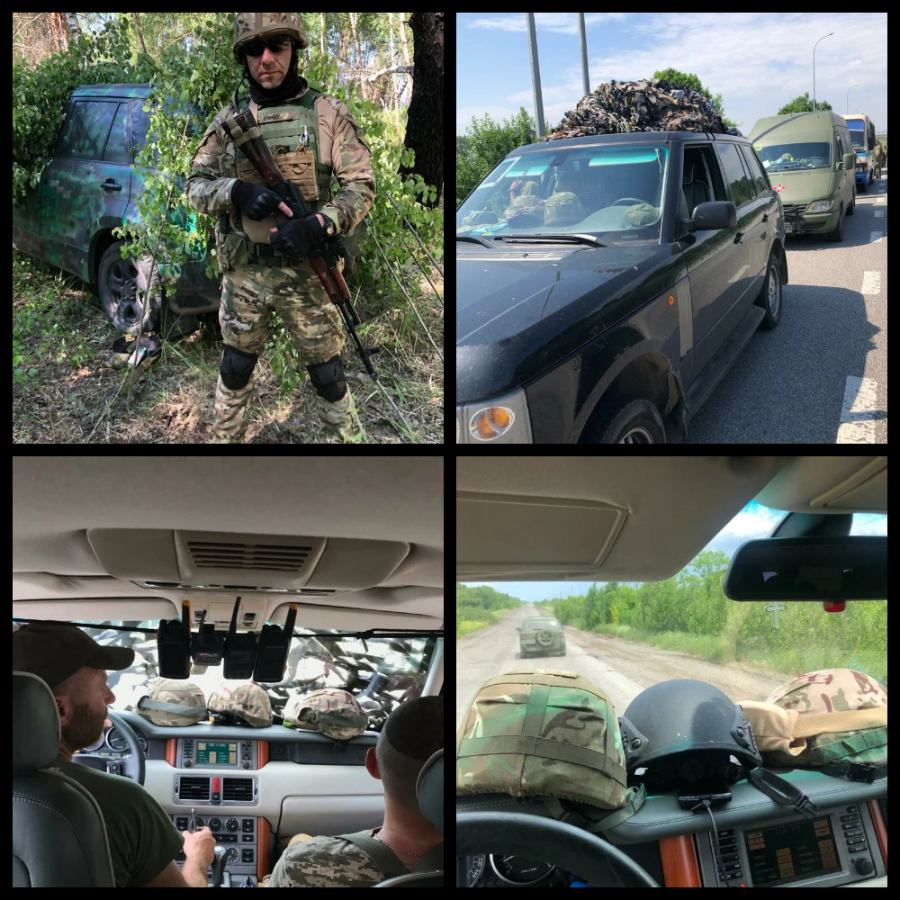
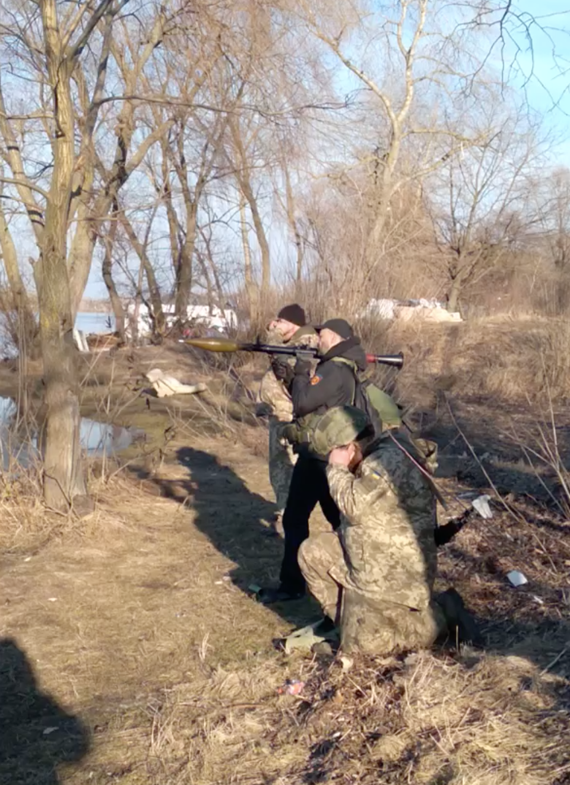

LEGION-XXMMII
ГРОМАДСЬКА ОРГАНІЗАЦІЯ "СПІЛКА ЗАХИСНИКІВ УКРАЇНИ "ЛЕГІОН-2022"


ПРО
LEGION-XXMMII
ГРОМАДСЬКА ОРГАНІЗАЦІЯ "СПІЛКА ЗАХИСНИКІВ УКРАЇНИ "ЛЕГІОН-2022" (LEGION-MMXXII), створена ініціативною групою військовослужбовців 129 батальону 112 ОБр ТрО ЗСУ, 130 батальону 241 ОБр ТрО ЗСУ, учасниками АТО, ООС та небайдужими громадянами України задля досягнення спільної мети: протидії збройній агресії країні-окупанту. А також в майбутньому як ветеранська організація створена для захисту прав ветеранів та всіх її членів, реалізації спільних волонтерських та благодійних проектів спрямованих на допомогу військовослужбовцям, членам їх сімей, іншим громадянам постраждалим внаслідок військової агресії російської федерації, відновленню інфраструктури та економіки України у післявоєнний час.
ТЕРМІНОВИЙ ЗБІР
НАШИМ ХЛОПЦЯМ ПОТРІБНІ АВТОМОБІЛІ
Така халепа сталася з нашими бойовими автівками на відступі з під Североднецька та Лисичанська. Вони добре служили нам вірою і правдою, комусь встигли врятувати життя та згинули самі. Після тих запеклих боїв, згадуємо про них як про своїх вірних бойових товаришів, які не повернулися з поля бою. Вдячні за прихисток від непогоди, та за можливість швидко нанести удар супротивнику та евакуюватись з під артилерійського обстрілу.. Тепер збираємо кошти на нові авто, долучайтеся. Машина на фронті це не розкіш, а збереженні життя, та ефективне виконання бойового завдання. Пам'ятайте: За нами мирні міста та села, ми не маємо права на помилку, ви маєте право та можливість нам в цьому допомогти!) Також звертаємось вкотре до БЛАГОДІЙНИХ ФОНДІВ, в деякі я знов буду писати листи вже по сьомому разу, Шановні благодійники, відповідайте будь-ласка на наші листи, кожен раз бачити як Ви надаєте комусь по 40 автівок за один раз, та сподіватись, може вже і до нас черга дійде.. а черги немає.. і листи, кожен раз без відповіді..


ДОПОМОГТИ ЗСУ
ІНТЕРВ'Ю З БІЙЦЕМ 130 БАТАЛЬЙОНУ
Звертаючись до різноманітних фондів, установ, організацій з проханням забезпечити нас автотранспортом постійно нариваюсь на таке відношення: Ви ж ТрО? Нам потрібно в першу чергу дати транспорт на передову... Шановні фонди!!!!, ми вже давно воюємо на передовій, наших хлопців постійно закидають в самісіньке пекло, щоб закрити дири в обороні, посилити наступ або прикрити відступ... Але сумний досвід таких боїв показав (нажаль маємо значні втрати), що після прикриття відходу основних військ нам теж потрібно на чомусь оперативно відходити, на чомусь вивозити боєприпаси, амуніцію, поранених та що саме прикре - 200-х. Іноді не має можливості вивезти тіла, щоб передати їх потім жінкам та матерям загиблих.. Автомобіль на фронті це не розкіш, а збереженні життя та ефективність виконання бойової задачі. Про те ж саме розповідають наші побратими з 130 батальону 112 ОБр ТрО ЗСУ, які воюють на Харьківщині. "Демон" для русні, а для нас просто Вітя, який з перших днів війни, також як і ми, збирав по крохам форму, амуніцію, інструмент та іншу техніку для своєї роти...
РУСЬКИЙ КОРАБЛЬ ІДИ НАХУЙ!
ПОЇЗДКА НА СХІД УКРАЇНИ
Поїздка на Схід України принесла втрати в особовому складі та техніці, але завдяки таким людям тримається сила нашої армії. Їх вважали зниклими безвісті, але вони вийшли з пекла майже через дві доби боїв та вивели поранених. Хлопці зараз ще на реабілітації, бажаємо їм скорішого одужання та незламності духу!)

Де ТРО? Ну і що тепер робитиме ТРО? Що робить ТРО?
А ТРО розпустили?
Ні, не розпустили!
Ми тренуємося. Стріляти, лупити, 'башити їх нафіг, гнати їх, виганяти, палити, коптити тощо
Ось так, з усмішкою, іноді матюками і вірою в перемогу. Навіть через річку!
